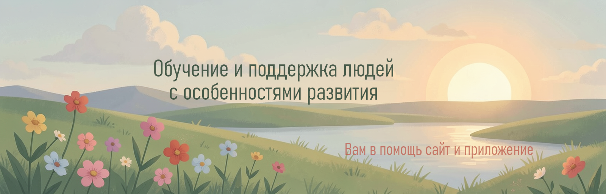
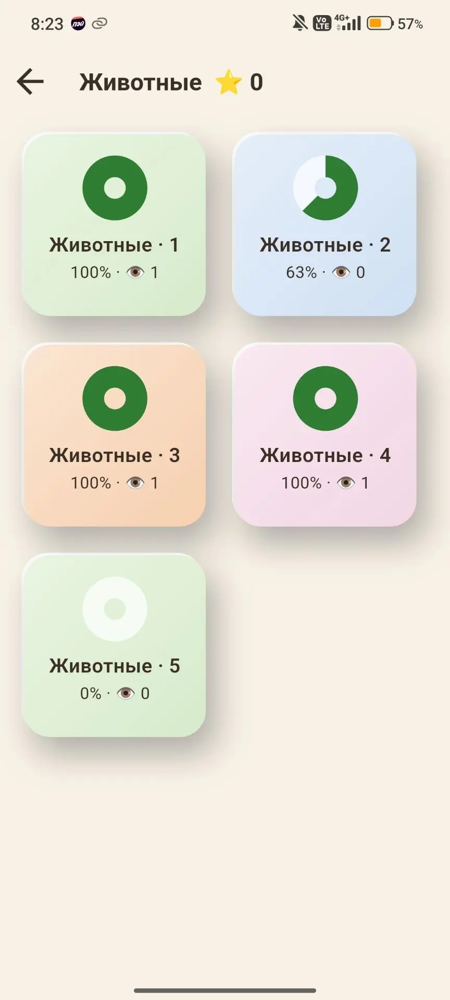
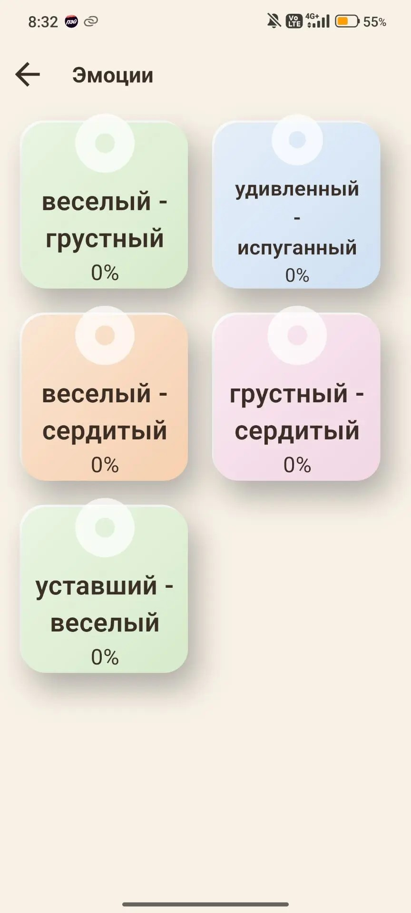
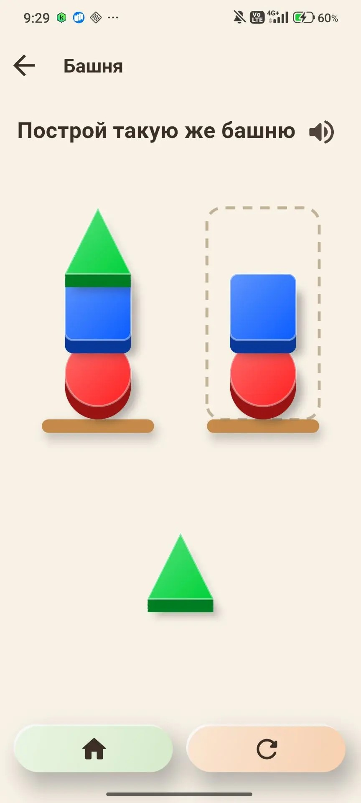
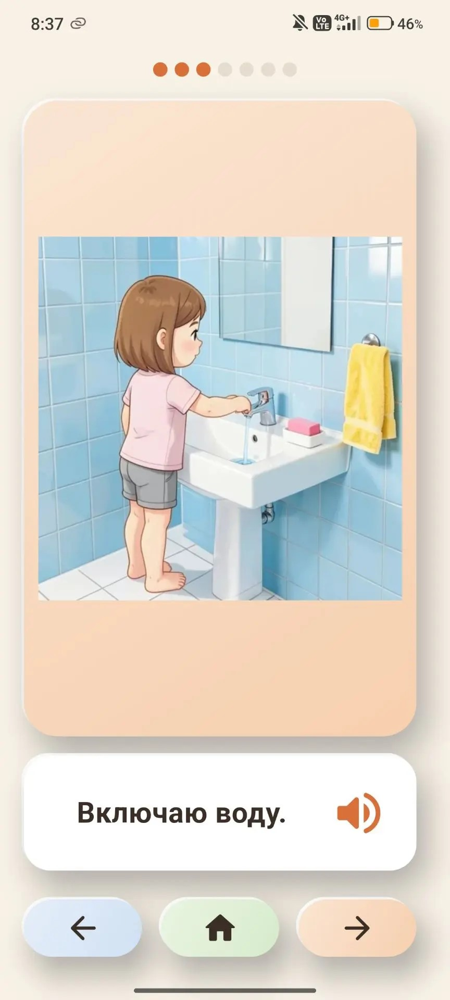

Образовательное приложение «Солнечный мир»
Бесплатный цифровой ресурс для обучения детей и взрослых. Подходит для людей с особенностями развития (синдром Дауна, РАС). Слова, картинки, звук, игры и пошаговые бытовые истории помогают узнавать новое, запоминать и применять в жизни.
Все виды занятий базируются на методиках развития, подтвержденных и используемых в РФ.
Открыть в браузере Скачать APK
- Бесплатно
- Без регистрации
- Работает без интернета
- Данные остаются на устройстве
Миссия
- Сделать занятия понятными и доступными, чтобы у родителей всегда под рукой был удобный инструмент.
- Помочь педагогам вести группу учеников, составлять и проверять домашние задания, анализировать их работу и выводить отчёты.
Для кого
Приложение может использоваться любыми детьми и взрослыми, в том числе людьми с особенностями развития (синдром Дауна, РАС) и их родителями, логопедами, педагогами и специалистами.
Цель проекта
Сделать занятия понятными и доступными. У родителей всегда должен быть под рукой удобный инструмент для занятий дома, без интернета и регистрации. У педагогов – возможность вести группу учеников, давать и проверять домашние задания и видеть результаты.
Ещё одна задача – давать быстрые и достоверные ответы на частые вопросы семей, с указанием источника. Для этого есть Библиотека.
Социальная направленность
Проект некоммерческий, создаётся для помощи людям с отставанием в развитии. Все виды занятий в приложении базируются на методиках, используемых в РФ.
Что внутри
Приложение работает без интернета и регистрации. Профилей можно завести несколько – у каждого свой прогресс и ⭐.
Слова
Карточки со словами по темам: картинка и слово, которое произносит голос. Наборы по 8 слов; на плашке видно, сколько раз набор просмотрен.
Зачем нужно: новое слово воспринимается сразу тремя способами – видно, слышно, читается. Так его легче узнать, запомнить и начать использовать в речи.
Ребёнок: смотрит картинку и слушает слово, листает
карточки.
Родитель: выбирает тему и помогает повторять слова вслух.


Угадай слово
Уровни по категориям: слово звучит, нужно выбрать верную картинку из нескольких.
Зачем нужно: закрепляет слова, изученные в разделе «Слова». Ребёнок учится узнавать правильное название среди вариантов – тренируются внимание, память и понимание смысла, слово легче переходит в активную речь.
Ребёнок: нажимает на картинку, которая подходит слову.
Родитель:
хвалит за успехи, смотрит, какие слова угаданы с первой попытки.


Цвета
Наборы заданий на цвета: «Выбери красный» – среди ярких вариантов.
Зачем нужно: знакомит с основными цветами и учит различать их – основа для счёта, сортировки и описания предметов.
Ребёнок: находит и нажимает нужный цвет.
Родитель: выбирает
набор и закрепляет названия цветов.


Эмоции
Лица с разными эмоциями: «Выбери радость». Наборы повторяются несколько раз.
Зачем нужно: помогает узнавать эмоции по лицу и называть их словами – шаг к пониманию себя и других и к общению.
Ребёнок: выбирает лицо с названной эмоцией.
Родитель:
проговаривает эмоции, обсуждает с ребёнком, когда они бывают.


Строим
Две игры на мелкую моторику и внимание: «Расставь» – вставить круг, квадрат, треугольник и звезду в вырезы доски; «Башня» – построить такую же башню из фигур.
Зачем нужно: развивает мелкую моторику, координацию «глаз – рука», умение сравнивать формы и действовать по образцу.
Ребёнок: перетаскивает фигуры на нужные места.
Родитель: задаёт
число фигур в настройках игры.


Истории
Библиотека коротких историй по категориям и местам: «Я мою руки», «Я одеваюсь», «Я иду в поликлинику». Пройденные отмечены значком. Истории не по возрасту профиля серые, но доступны.
Зачем нужно: показывает пошаговое выполнение бытовых ситуаций. Человек видит, из каких шагов состоит привычное действие, и лучше понимает их последовательность; новая ситуация (например, поход к врачу) становится предсказуемой и менее тревожной.
Ребёнок: слушает и смотрит историю.
Родитель: читает вместе,
обсуждает сюжет, повторяет шаги в жизни.


Для родителей
Закрытый раздел: профили, прогресс по играм, настройки (автозвук, автолистание, число повторов и фигур).
Для логопедов, педагогов и специалистов
Ведите группу учеников, составляйте и проверяйте домашние задания, анализируйте работу каждого ребёнка и выводите отчёты.
Зачем нужно: видно, какие слова и задания даются легко, а где нужна помощь, – занятия можно подстраивать под ученика и показывать результат родителям.
Мы в соцсетях
Приложение не заменяет занятия со специалистом и не является медицинской рекомендацией. См. дисклеймер.